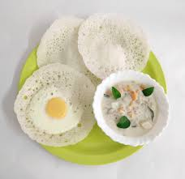

Litti is a round wheat flour ball stuffed with sattu (roasted gram flour), seasoned with mustard oil, garlic, ginger, ajwain, green chilies, lemon juice, and various local spices. The dough balls are traditionally baked over cow dung cakes or coal fire, giving them a smoky flavor. After cooking, they are usually dipped in ghee (clarified butter) to enhance the taste.
Chokha is a mashed vegetable preparation made from roasted eggplant (baingan), boiled potatoes (aloo), or tomatoes (tamatar) mixed with raw mustard oil, garlic, green chilies, onion, and fresh coriander leaves. It adds a soft, tangy, spicy balance to the dry, nutty flavor of litti.

Thukpa is a comforting noodle soup that originates from Arunachal Pradesh and is also popular in neighboring Himalayan regions like Sikkim and Ladakh. It consists of handmade noodles served in a hot, aromatic broth made with vegetables, meat (commonly chicken or mutton), and local spices like garlic, ginger, and green chilies. The dish reflects Tibetan influence and is known for its warming quality, especially during cold mountain weather. Thukpa is more than just food—it's a symbol of local hospitality and is often enjoyed as a hearty meal that brings people together in the high-altitude communities of northeastern India.

Masor Tenga (also spelled "Mensor Tenga") is a signature fish curry from Assam, cherished for its light, tangy, and refreshing flavor. "Masor" means fish and "Tenga" refers to sourness, which defines the essence of this dish. It is usually made with fresh river fish like Rohu, cooked in a broth of tomatoes, outenga (elephant apple), lemon, or raw mango, depending on seasonal availability. The curry is lightly spiced, allowing the sourness to shine through, and is often tempered with mustard seeds, fenugreek, and green chilies. Masor Tenga is traditionally served with hot steamed rice and is especially preferred during the summer months as it aids digestion and has a cooling effect.

Faraa, also known as Phara or Rice Flour Dumplings, is a traditional dish from Chhattisgarh, especially popular among rural communities. It is made using rice flour dough shaped into small dumplings or cylinders, which are then steamed or boiled and sometimes lightly sautéed with mustard seeds, curry leaves, and green chilies. The filling inside can be plain or include a mixture of lentils, spices, and herbs depending on the region or preference. Faraa is loved for its simplicity, soft texture, and health benefits as it's low in oil and rich in carbohydrates and fiber. Often eaten as a snack or light meal, it showcases the Chhattisgarhi tradition of wholesome, earthy flavors rooted in local ingredients.
Goan Fish (Goa)

Goan Fish Curry is a staple dish from Goa, representing the perfect blend of coastal and Portuguese-influenced Indian cuisine. It is typically prepared with freshly caught fish—like kingfish (surmai), pomfret, or mackerel—simmered in a flavorful, tangy, and spicy coconut-based gravy. The curry gets its signature taste from a blend of ground coconut, kokum or tamarind, red chilies, garlic, and turmeric, often enhanced with mustard seeds and curry leaves. The result is a creamy, vibrant orange curry with a balance of heat and acidity. Goan fish curry is usually served hot with steamed rice, making it a comforting and aromatic meal that reflects the tropical richness of Goa's coastal kitchens.
Pulihora (Andhra Pradesh)

Pulihora, also known as Tamarind Rice, is a tangy and spicy rice dish from Andhra Pradesh, widely enjoyed across South India. It is made by mixing cooked rice with a flavorful paste prepared from tamarind pulp, green chilies, turmeric, jaggery, and a tempering of mustard seeds, curry leaves, dry red chilies, chana dal, urad dal, and peanuts. The dish strikes a perfect balance between sourness, spiciness, and a hint of sweetness, with the crunchy lentils and nuts adding texture. Pulihora is not just a regular meal—it holds a special place in festivals, temple offerings, and traditional feasts, symbolizing both taste and auspiciousness in South Indian culture.
Dhokla (Gujrat)

Dhokla is a soft, fluffy, and savory steamed cake made from fermented gram flour (besan) batter, and is one of the most iconic dishes from Gujarat. Lightly spiced and slightly tangy, dhokla is prepared by fermenting the batter with curd and leavening agents like baking soda or fruit salt, which helps achieve its spongy texture. Once steamed, it's cut into squares and tempered with mustard seeds, green chilies, sesame seeds, and curry leaves, then garnished with fresh coriander leaves and grated coconut. Served with green chutney or sweet tamarind chutney, dhokla is not only a beloved breakfast or snack but also a symbol of Gujarat’s love for healthy, flavorful, and vegetarian cuisine.
Bajre Ki Khichdi (Haryana)

Bajre Ki Khichdi is a traditional and nutritious dish from Rajasthan, made using pearl millet (bajra) and moong dal or sometimes with seasonal vegetables. Known for its earthy flavor and high energy content, this khichdi is especially popular in the desert regions due to bajra’s ability to generate warmth and sustain energy. The grains are usually coarsely ground or soaked, then pressure-cooked with lentils and mildly spiced with cumin seeds, garlic, ginger, and asafoetida (hing). It is often served with a dollop of ghee, curd, or lassi, making it a wholesome and filling meal. Bajre Ki Khichdi is not only a staple winter dish but also reflects the resourceful cooking style of Rajasthani cuisine, which makes the best use of local grains and simple ingredients.
Vada Pav (Maharashtra)

Vada Pav is a beloved street food from Maharashtra, especially popular in Mumbai, often referred to as the city's own burger. It consists of a spicy potato fritter (batata vada) made from mashed potatoes mixed with garlic, green chilies, mustard seeds, turmeric, and coriander, coated in a gram flour batter and deep-fried until golden. This vada is placed inside a soft pav (bun) that’s typically slathered with spicy chutneys—like garlic chutney, tamarind chutney, or green chili chutney—and sometimes accompanied by a fried green chili. Affordable, filling, and bursting with flavor, vada pav is more than just a snack—it's a cultural icon that represents the hustle and soul of Mumbai’s streets.
Appam (kerala)

Appam is a soft, lacy, bowl-shaped pancake made from fermented rice batter and coconut milk, and is a staple in Kerala's cuisine. With its crisp, thin edges and fluffy, spongy center, appam is both light and satisfying. The batter is usually fermented overnight using a mix of raw rice, cooked rice, coconut, and a touch of yeast or toddy, which gives it a mild tang and airy texture. Cooked in a special curved pan called an appachatti, it forms its signature bowl shape. Appam is traditionally served with vegetable stew, chicken curry, egg curry, or kadala (black chickpea) curry, making it a versatile dish for breakfast or dinner. Its subtle coconut flavor and delicate texture make appam a cherished dish across South India, especially during festive and special occasions.
Bai (Mizoram)

Bai is a traditional and wholesome dish from Mizoram, known for its simplicity, nutrition, and earthy flavors. It is essentially a boiled vegetable stew, made using locally available greens such as mustard leaves, bamboo shoots, beans, spinach, and herbs, often flavored with baking soda or fermented soybeans to enhance the texture and aroma. Bai is typically cooked with minimal spices, allowing the natural taste of the vegetables to shine through. Sometimes, pieces of meat like pork or chicken are added to enrich the dish, but vegetarian versions are also common. Often served with steamed rice, Bai reflects the Mizo community’s love for clean, light, and healthy cooking rooted in their tribal and agrarian lifestyle.
Bisi Bele Bath (Karnataka)

Bisi Bele Bath is a traditional, flavorful one-pot meal from Karnataka, known for its unique blend of rice, lentils, vegetables, and aromatic spices. The name literally means "hot lentil rice" in Kannada. It is prepared by cooking toor dal (pigeon peas) and rice together with a medley of vegetables like carrots, beans, peas, and capsicum. What sets Bisi Bele Bath apart is its special spice mix—Bisi Bele Bath powder—made from roasted spices such as coriander seeds, cinnamon, cloves, dry red chilies, and coconut, which gives the dish a rich, deep flavor. Tamarind pulp adds tanginess, while a final tempering of mustard seeds, curry leaves, and cashews fried in ghee enhances the aroma and taste. Typically served hot with boondi, papad, or raita, Bisi Bele Bath is a comforting and hearty meal that’s deeply rooted in Karnataka’s culinary heritage.
Chettinad Chiken Curry (Tamil Nadu)

Chettinad Chicken Curry is a fiery and aromatic dish from the Chettinad region of Tamil Nadu, famous for its bold use of spices and intense flavors. This curry is prepared using chicken pieces marinated with turmeric, red chili, and lemon juice, then cooked in a rich, freshly ground masala made of dry roasted spices like fennel, cumin, coriander seeds, black pepper, cardamom, cinnamon, and cloves, along with grated coconut, garlic, ginger, and onions. The blend gives the dish a distinctive deep brown color and a complex, spicy profile. Often garnished with curry leaves and served with steamed rice, dosa, appam, or parotta, Chettinad Chicken Curry stands out for its bold taste and is a staple at festive meals and special occasions in Tamil households. It perfectly represents the Chettiar community’s love for strong, spicy, and deeply satisfying food.
Daal Bhati Churma (Rajsthan)

Daal Baati Churma is a signature dish from Rajasthan, showcasing the state’s rich and hearty culinary tradition. It consists of three main elements: daal, a spiced lentil curry usually made from a blend of toor, moong, and chana dals cooked with garlic, onions, tomatoes, and traditional Rajasthani spices; baati, round, unleavened wheat flour balls baked or roasted until crisp on the outside and soft inside, often dipped in ghee before serving; and churma, a sweet crumbly mixture made from crushed baati or wheat flour, ghee, and jaggery or sugar, sometimes garnished with dry fruits. The combination offers a beautiful balance of flavors—spicy, savory, and sweet—making it a festive meal served during weddings, festivals like Diwali, or traditional feasts, and a true expression of Rajasthani hospitality.
Dalma (Odisha)
Dalma is a traditional and wholesome dish from Odisha, deeply rooted in the state’s cultural and culinary heritage. It is made by simmering toor dal (pigeon peas) with a variety of seasonal vegetables such as raw banana, pumpkin, brinjal (eggplant), papaya, and drumsticks, along with a simple yet flavorful seasoning of ginger, bay leaves, cumin, and mustard seeds. What makes Dalma unique is the absence of onion and garlic, making it a staple in temple offerings and during religious festivals. It is typically cooked with grated coconut and ghee to enhance its richness and is both nutritious and comforting. Served hot with steamed rice, Dalma embodies the essence of Odia cuisine—balanced, healthy, and prepared with love.
Appam (kerala)
Appam is a soft, lacy, bowl-shaped pancake made from fermented rice batter and coconut milk, and is a staple in Kerala's cuisine. With its crisp, thin edges and fluffy, spongy center, appam is both light and satisfying. The batter is usually fermented overnight using a mix of raw rice, cooked rice, coconut, and a touch of yeast or toddy, which gives it a mild tang and airy texture. Cooked in a special curved pan called an appachatti, it forms its signature bowl shape. Appam is traditionally served with vegetable stew, chicken curry, egg curry, or kadala (black chickpea) curry, making it a versatile dish for breakfast or dinner. Its subtle coconut flavor and delicate texture make appam a cherished dish across South India, especially during festive and special occasions.
Bai (Mizoram)
Bai is a traditional and wholesome dish from Mizoram, known for its simplicity, nutrition, and earthy flavors. It is essentially a boiled vegetable stew, made using locally available greens such as mustard leaves, bamboo shoots, beans, spinach, and herbs, often flavored with baking soda or fermented soybeans to enhance the texture and aroma. Bai is typically cooked with minimal spices, allowing the natural taste of the vegetables to shine through. Sometimes, pieces of meat like pork or chicken are added to enrich the dish, but vegetarian versions are also common. Often served with steamed rice, Bai reflects the Mizo community’s love for clean, light, and healthy cooking rooted in their tribal and agrarian lifestyle.
Chettinad Chiken Curry (Tamil Nadu)
Chettinad Chicken Curry is a fiery and aromatic dish from the Chettinad region of Tamil Nadu, famous for its bold use of spices and intense flavors. This curry is prepared using chicken pieces marinated with turmeric, red chili, and lemon juice, then cooked in a rich, freshly ground masala made of dry roasted spices like fennel, cumin, coriander seeds, black pepper, cardamom, cinnamon, and cloves, along with grated coconut, garlic, ginger, and onions. The blend gives the dish a distinctive deep brown color and a complex, spicy profile. Often garnished with curry leaves and served with steamed rice, dosa, appam, or parotta, Chettinad Chicken Curry stands out for its bold taste and is a staple at festive meals and special occasions in Tamil households. It perfectly represents the Chettiar community’s love for strong, spicy, and deeply satisfying food.
Eromba (Manipur)
Eromba is a traditional comfort food from Manipur, cherished for its simplicity, bold flavors, and deep connection to local ingredients. This dish is made by boiling a combination of vegetables—such as yongchak (stink beans), bamboo shoots, potatoes, or leafy greens—until soft, and then mashing them together with a generous amount of fermented fish (ngari) and fiery red chilies. The mashed mixture is then seasoned with salt and mustard oil, giving it a pungent and spicy profile that is both distinctive and addictive. Eromba is typically enjoyed with steamed rice and is a daily staple in many Manipuri households. It's not just a meal but a cultural representation of how the region harmonizes fermentation, spice, and freshness in everyday cooking.
Gutke (Uttarakhand)
Aloo Ke Gutke, often simply called Gutke, is a popular traditional dish from the hill state of Uttarakhand, especially loved in the Kumaon region. It features boiled potatoes sautéed with aromatic spices like mustard seeds, dry red chilies, turmeric, coriander powder, and jakhya seeds (a regional spice that gives a unique crackle and flavor). The dish is typically cooked in mustard oil, which adds a deep, rustic taste and enhances the authenticity. Gutke is usually served with kheera raita (cucumber yogurt), bhang ki chutney (hemp seed chutney), or with a simple serving of rice or roti. Simple, spicy, and bursting with earthy flavor, Aloo Ke Gutke is more than just a potato dish—it is a taste of the hills and a comfort food for the locals.
Shorshe Ilish (West Bengal)

Shorshe Ilish is an iconic and beloved dish from West Bengal, celebrated for its rich flavor and cultural significance. It features Hilsa fish (Ilish), a prized and flavorful fish revered in Bengali cuisine, cooked in a pungent and aromatic mustard-based gravy. The key ingredients include yellow mustard seeds, green chilies, turmeric, mustard oil, and a hint of salt, which together create a bold and sharp taste that beautifully complements the soft, oily texture of the Hilsa. The dish is often steamed or gently simmered, preserving the delicate flavor of the fish. Shorshe Ilish is traditionally served with steamed rice and is a staple during monsoons and festive occasions like Poila Boishakh or family gatherings. Deeply emotional for many Bengalis, this dish represents both culinary mastery and nostalgic ties to home.